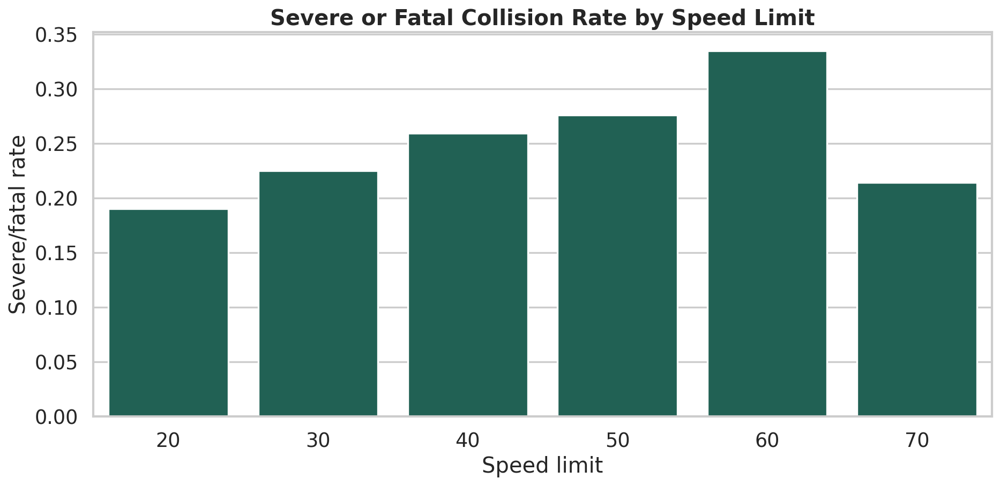
速度限制与严重事故
用于引出核心自变量：速度限制越高，严重事故比例是否更高。
Model Results
这一页展示建模后可以得到的典型结果：描述性图表、回归系数表、模型比较、情景预测和零膨胀模型输出。
01
先看自变量和因变量的关系，再进入模型。速度限制、城乡属性、照明条件和弱势交通参与者零值分布，是本案例最适合讲解的几个入口。

用于引出核心自变量：速度限制越高，严重事故比例是否更高。
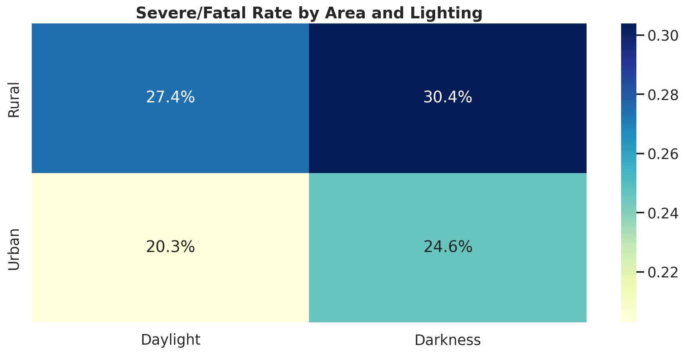
热力图帮助比较 rural/urban 与 daylight/darkness 的组合差异。
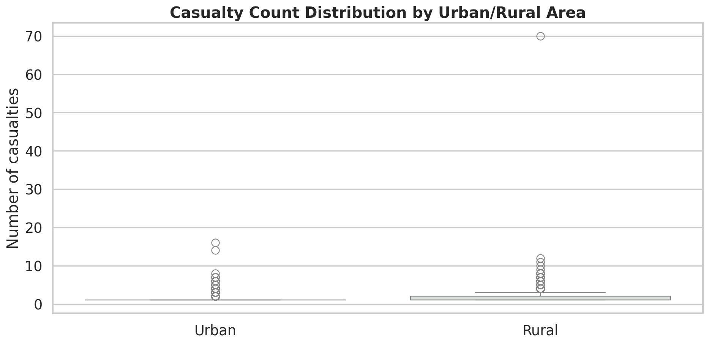
展示计数型因变量 `number_of_casualties` 的分布形态。
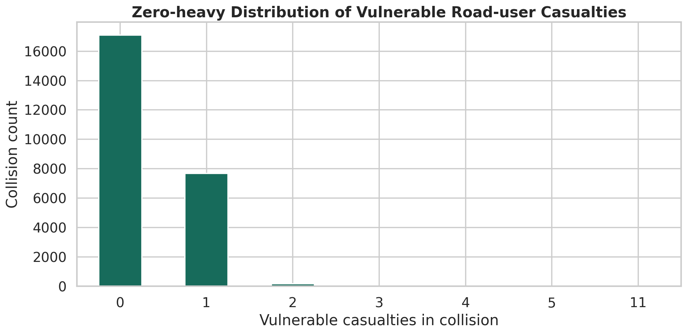
大量 0 值为零膨胀模型提供直觉。
02
模型结果通常以系数表和可解释图呈现。逻辑回归关注 odds ratio，泊松回归关注 incidence rate ratio。
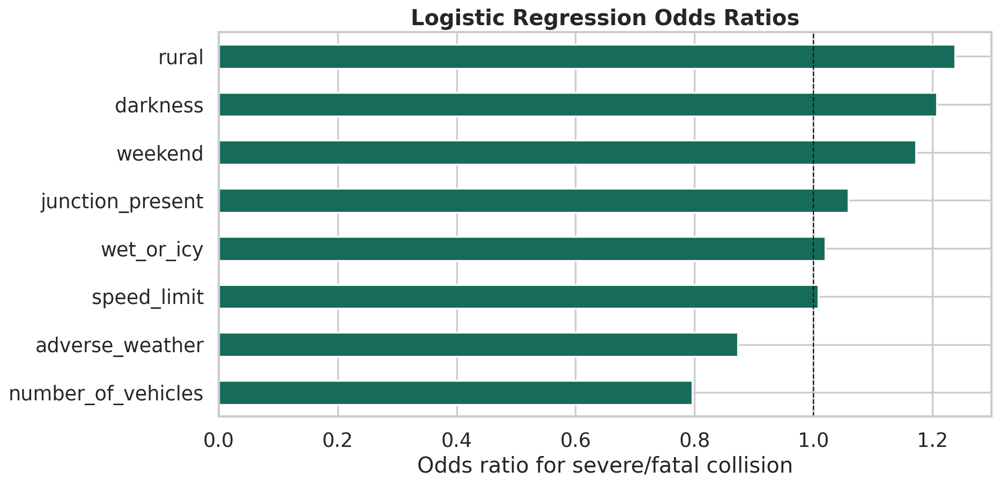
示例解读：`speed_limit` 的 odds ratio 约为 1.008，表示速度限制每增加 1 mph，严重/死亡事故的优势比约增加 0.8%。
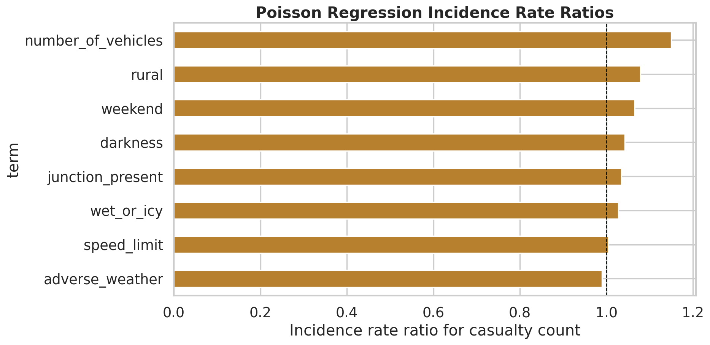
IRR 用来解释计数因变量的相对变化，例如期望伤亡人数的增加或减少。
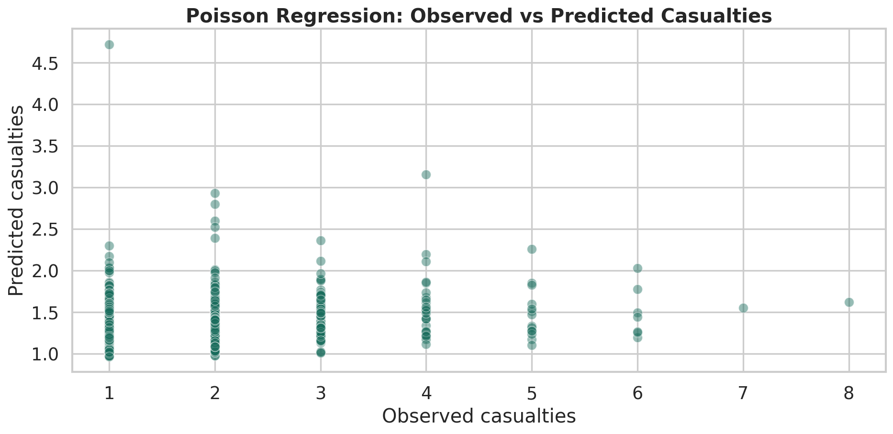
散点图可以检查模型预测是否跟实际计数大致一致。
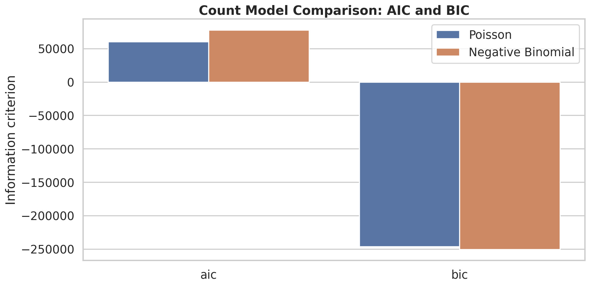
用 AIC/BIC 比较计数模型，是讲解模型选择的直观材料。
odds_ratio 大于 1 表示严重或死亡事故的优势比更高，小于 1 表示优势比更低。比如 rural 的 OR 约为 1.238，表示在控制其他变量后，乡村地区严重/死亡事故的优势比更高。
incidence_rate_ratio 大于 1 表示期望伤亡人数增加，小于 1 表示减少。比如 number_of_vehicles 的 IRR 约为 1.149，表示涉及车辆数增加时，期望伤亡人数更高。
| 变量 | 系数 | Odds Ratio | p 值 | 解释 |
|---|---|---|---|---|
| speed_limit | 0.008 | 1.008 | <0.001 | 速度限制越高，严重/死亡事故优势比略升高。 |
| rural | 0.213 | 1.238 | <0.001 | 乡村地区的严重/死亡事故优势比更高。 |
| darkness | 0.188 | 1.207 | <0.001 | 夜间或照明不足与更高严重事故优势比相关。 |
| adverse_weather | -0.137 | 0.872 | 0.007 | 不良天气在此模型中与较低优势比相关，需要谨慎解释，可能存在暴露量和驾驶行为变化。 |
| wet_or_icy | 0.019 | 1.020 | 0.650 | 统计证据不强，不宜过度解读。 |
| junction_present | 0.057 | 1.058 | 0.075 | 接近显著，但证据有限。 |
| weekend | 0.159 | 1.172 | <0.001 | 周末与更高严重/死亡事故优势比相关。 |
| number_of_vehicles | -0.228 | 0.796 | <0.001 | 涉及车辆数越多，严重/死亡事故优势比反而较低，可能和单车事故严重性较高有关。 |
| 变量 | 系数 | IRR | p 值 | 解释 |
|---|---|---|---|---|
| speed_limit | 0.004 | 1.004 | <0.001 | 速度限制每增加 1 mph，期望伤亡人数约增加 0.4%。 |
| rural | 0.075 | 1.078 | <0.001 | 乡村事故的期望伤亡人数更高。 |
| darkness | 0.041 | 1.042 | 0.001 | 夜间或照明不足与更高期望伤亡人数相关。 |
| adverse_weather | -0.010 | 0.990 | 0.592 | 统计证据不强。 |
| wet_or_icy | 0.027 | 1.028 | 0.087 | 弱证据，适合引导学生讨论显著性阈值。 |
| junction_present | 0.034 | 1.035 | 0.004 | 路口附近事故的期望伤亡人数略高。 |
| weekend | 0.064 | 1.066 | <0.001 | 周末事故期望伤亡人数更高。 |
| number_of_vehicles | 0.139 | 1.149 | <0.001 | 涉及车辆数增加，与期望伤亡人数增加相关。 |
03
情景预测把模型结果翻译成更容易理解的案例：在不同道路条件下，严重事故概率和预期伤亡人数如何变化。
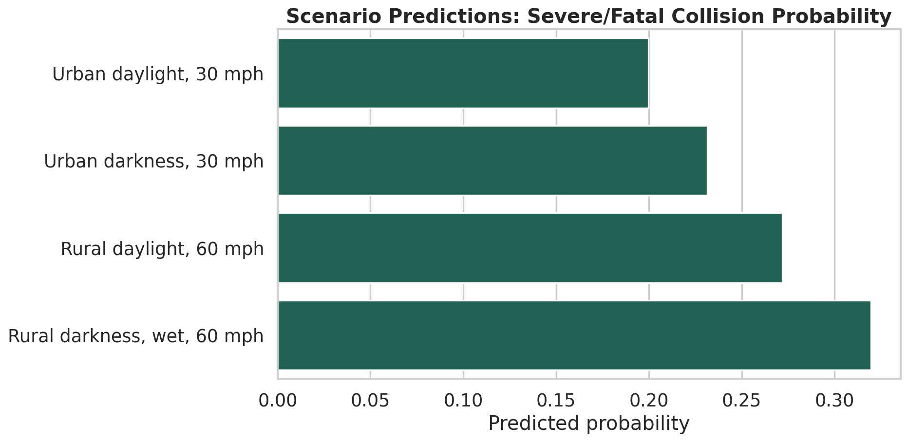
情景预测显示，乡村、夜间、潮湿和更高速度限制组合下，预测严重/死亡事故概率更高。
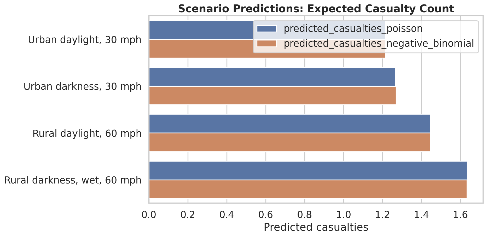
泊松和负二项模型可以输出每个情景下的预期伤亡人数。
| 情景 | 严重事故概率 | 泊松预测伤亡数 | 负二项预测伤亡数 |
|---|---|---|---|
| Urban daylight, 30 mph | 0.200 | 1.215 | 1.216 |
| Urban darkness, 30 mph | 0.231 | 1.266 | 1.270 |
| Rural daylight, 60 mph | 0.272 | 1.447 | 1.447 |
| Rural darkness, wet, 60 mph | 0.320 | 1.635 | 1.634 |
04
弱势交通参与者伤亡数有大量零值，适合展示零膨胀模型如何把零值过程和计数过程拆开。
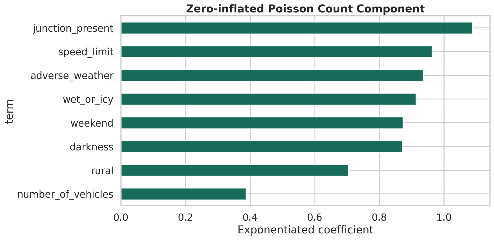
展示在非结构性零值状态下，自变量与弱势交通参与者伤亡数之间的关系。
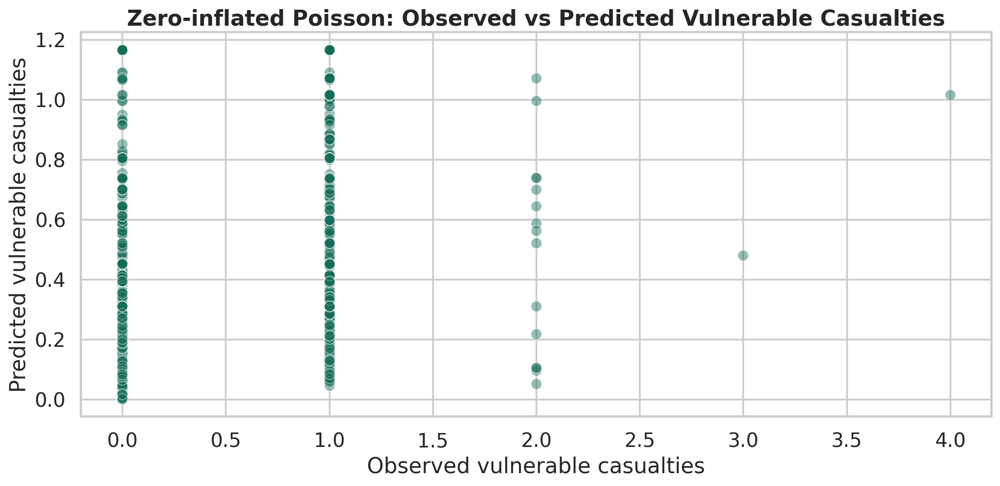
观测值和预测值对比可用于检查模型是否捕捉到了计数结果的基本分布。
inflate_ 开头的变量属于零膨胀部分，解释“为什么更可能是结构性零值”。非 inflate_ 的变量属于计数组件，解释“在非结构性零值状态下，计数如何变化”。
vulnerable_casualties 有大量 0，因为多数事故没有行人或骑行者伤亡。直接使用普通泊松模型可能无法充分表达这种零值机制。
| 组件 | 变量 | 系数 | exp(coef) | p 值 | 解释 |
|---|---|---|---|---|---|
| count | speed_limit | -0.037 | 0.964 | <0.001 | 在计数组件中，速度限制越高，弱势交通参与者伤亡数更低，可能与道路类型和行人/骑行者暴露量有关。 |
| count | rural | -0.350 | 0.705 | <0.001 | 乡村事故中弱势交通参与者伤亡数更低，可能因为行人和骑行者暴露更少。 |
| count | junction_present | 0.085 | 1.088 | <0.001 | 路口附近弱势交通参与者伤亡数更高。 |
| count | number_of_vehicles | -0.950 | 0.387 | <0.001 | 涉及车辆数越多，弱势交通参与者伤亡数更低，提示该因变量与事故类型强相关。 |
| zero inflation | rural | 1.034 | 2.813 | 0.992 | 零膨胀部分不显著，教学中应提醒学生不要只看系数方向。 |
05